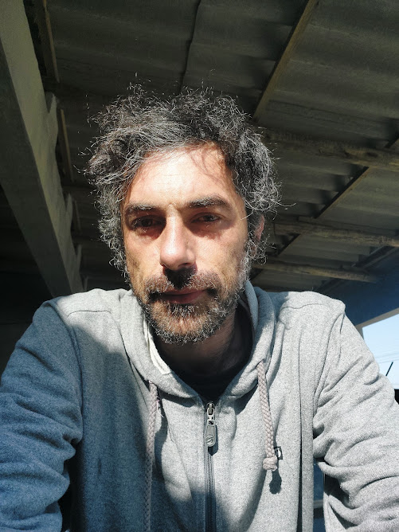

Portfólio Web - Lenon F. Philippi

Me chamo Lenon Fernandes Philippi, sou brasileiro e morador da cidade de Balneário Rincão em Santa Catarina. Atualmente sou estudante de desenvolvimento web no curso ministrado pela Trybe, e freelancer em treinamento de inteligência artificial.
Habilidades
- Baixista (contra-baixo)
- Leitura e escrita de partitura
- CAD - Solid Edge, Solid Works e AutoCad
- Corel Draw
- Manuntenção de Hardware
Ciências da Computação - blog de Gustavo Pantuza, com muita informação sobre o tema!